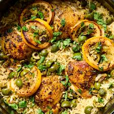

One-Pot Chicken and Rice

One-pot chicken and rice is a cooking method where chicken, rice, and
often vegetables are cooked together in a single vessel—such as a Dutch
oven, skillet, or pot—resulting in a complete meal with minimal cleanup.
This technique allows the rice to absorb the flavors of the chicken broth
and seasonings while cooking.
ingredients :
-
Chicken: 1–1.5 lbs boneless, skinless chicken thighs (or bone-in for a
richer flavor).
-
Rice: 1–1.5 cups long-grain white rice, such as Jasmine or Basmati
(rinsed).
-
Liquid: 2–3 cups chicken broth or chicken stock (low-sodium recommended)
- Cooking Fat: 1–2 tbsp olive oil, avocado oil, or butter.
- Onion: 1 medium yellow or white onion, diced.
- Garlic: 2–4 cloves, minced.
- Optional Veggies: Diced carrots, celery, or red bell peppers.
-
Salt & Pepper: Kosher salt and freshly ground black pepper to taste.
-
Spices: Paprika (smoked or sweet), dried thyme, dried oregano, or garlic
powder.
-
Optional Acid: A squeeze of fresh lemon juice or a dash of soy sauce.
- Garnish: Fresh parsley or green onions.
steps :
-
Sear the Chicken: Heat oil in a large skillet or pot over medium-high
heat. Season the chicken with salt, pepper, and paprika. Sear until
golden brown, then remove the chicken from the pot and set aside.
-
Sauté Aromatics: In the same pot, add diced onion and bell pepper. Sauté
for 3-4 minutes until softened. Add minced garlic and cook for another
minute until fragrant.
-
Toast the Rice: Add the rinsed rice to the pot and stir for 1-2 minutes
to toast slightly, allowing it to absorb the flavors.
-
Simmer: Pour in the chicken broth and stir, scraping up any browned bits
from the bottom of the pot. Return the chicken to the pot and bring to a
boil.
-
Cook: Cover the pot tightly with a lid, reduce the heat to low, and
simmer for 15-20 minutes, or until the rice is tender and the liquid is
absorbed.
-
Rest and Serve: Remove from heat and let it sit (covered) for 5-10
minutes to allow the rice to finish steaming. Fluff with a fork before
serving.
<<-- back